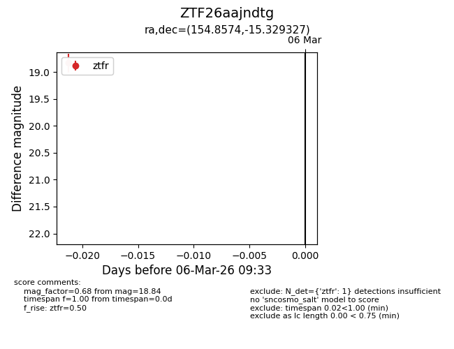
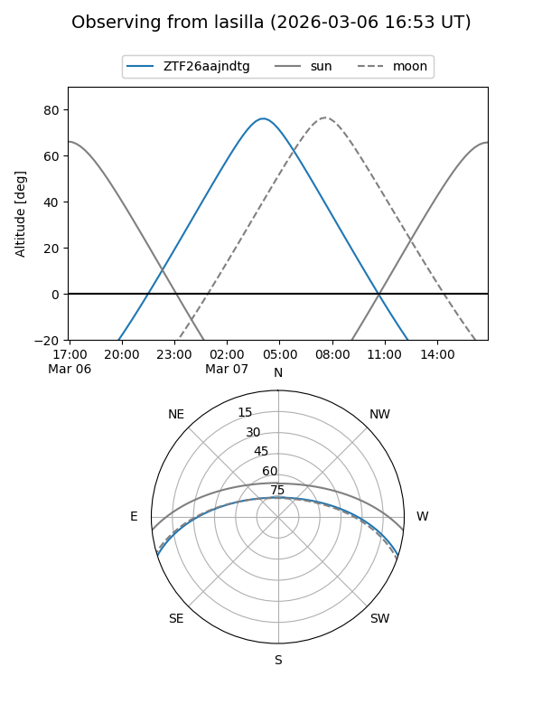
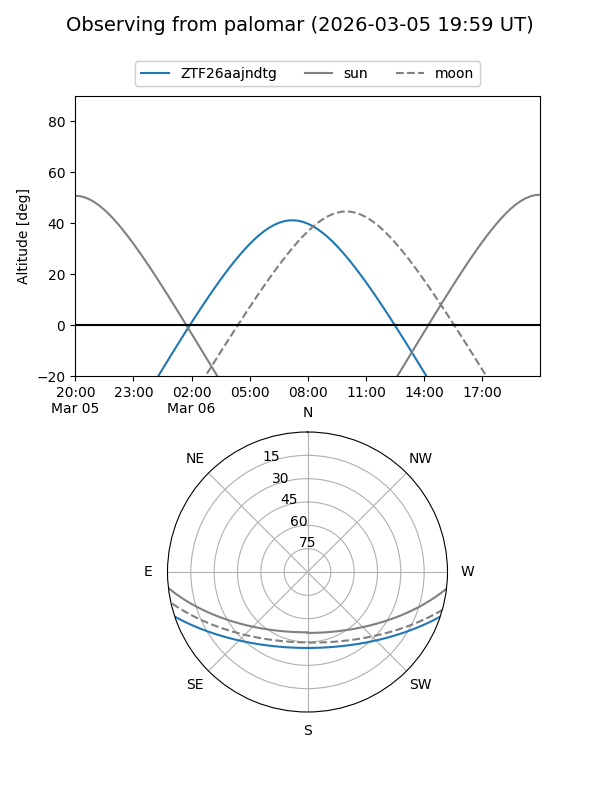

ZTF26aajndtg
Target ZTF26aajndtg at 2026-03-06 09:34
Aliases and brokers:
FINK: link
Lasair: link
ALeRCE: link
alt names
ZTF26aajndtg (ztf,fink_ztf)
Coordinates:
equatorial (ra, dec) = 154.8574,-15.32933
equatorial (HMS+DMS) = 10:19:25.77,-15:19:45.58
galactic (l, b) = (257.3483,+33.76601)
Flags:
Photometry:
last ztfr=18.84
1 ztfr detections
Lightcurve

Visibility


Additional plots